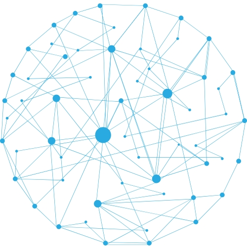

<!DOCTYPE html>
<html lang="pt-BR">
<head>
    <!-- 
      Sistema desenvolvido por Victor Luis Minikowski.
      victorlmnk@gmail.com
    
      Estratégia técnica de integração com Google Sheets:
    
      Este sistema foi projetado para utilizar o Google Sheets como backend de entrada e saída de dados, aproveitando ao máximo
      as ferramentas nativas do Google para criar um fluxo funcional, acessível e sem custo com infraestrutura.
    
      - Entrada de dados: os formulários são criados diretamente no Google Forms, permitindo coleta de informações com validação automática
        e integração nativa com planilhas Google Sheets.
    
      - Processamento: várias fórmulas são aplicadas nas planilhas para:
        * Unificar a lista de alunos;
        * Atribuir e manter os registros de frequência de forma automatizada;
        * Organizar os dados de forma limpa e contínua para gerar relatórios.
    
      - Saída de dados: os relatórios são gerados como páginas de visualização (modo página) e exportados em PDF.
        Os links desses relatórios são colados diretamente no `UNIFICADO2.html`, permitindo acesso rápido a relatórios organizados com layout profissional.
    
      Vantagens:
        * Uso gratuito e confiável da infraestrutura Google;
        * Sem necessidade de servidor ou banco de dados no estágio atual;
        * Facilidade na manutenção e edição manual dos dados;
        * Resultados visuais e imediatos, ideais para demonstrações e prototipagem;
        * Layouts de relatório claros e de fácil compreensão.
    
      Escalabilidade e evolução do sistema:
    
      Embora o Google Sheets atenda plenamente ao propósito atual, o sistema está preparado para escalar conforme a necessidade, permitindo:
      
      - Migração para banco de dados SQL (MySQL, PostgreSQL, etc.) para maior robustez e integridade dos dados;
      - Uso de PHP para autenticação real de usuários, segurança dos dados e lógica do sistema;
      - Criação de APIs REST para separação entre front-end e back-end e integração com apps externos;
      - Hospedagem em servidores profissionais (Heroku, Render, VPS, etc.);
      - Painel administrativo com perfis de acesso e controle detalhado;
      - Aproveitamento total do front-end Gentelella já implementado.
    
      Essa abordagem híbrida e progressiva garante flexibilidade, custo reduzido e possibilidade de expansão profissional do sistema.
    -->

    <meta charset="utf-8">
    <meta http-equiv="X-UA-Compatible" content="IE=edge">
    <meta name="viewport" content="width=device-width, initial-scale=1">
    <link rel="icon" href="images/favicon.ico" type="image/ico" />

    <title>Sistema Unificado</title>

    <!-- Google Fonts -->
    <link href="https://fonts.googleapis.com/css2?family=Inter:wght@400;500;600;700&display=swap" rel="stylesheet">
    
    <!-- Material Icons -->
    <link href="https://fonts.googleapis.com/icon?family=Material+Icons+Round" rel="stylesheet">
    
    <!-- Tailwind CSS via CDN -->
    <script src="https://cdn.tailwindcss.com"></script>
    <script>
      tailwind.config = {
        theme: {
          extend: {
            fontFamily: {
              sans: ['Inter', 'sans-serif'],
            },
          }
        }
      }
    </script>
    
    <!-- Custom CSS -->
    <style>
      :root {
        --sidebar-width: 280px;
        --sidebar-width-collapsed: 80px;
      }
      
      body {
        font-family: 'Inter', sans-serif;
        background-color: #f1f5f9;
        color: #334155;
        -webkit-font-smoothing: antialiased;
        -moz-osx-font-smoothing: grayscale;
      }
      
      .sidebar {
        background: linear-gradient(170deg, #24558b 0%, #1e3a5f 100%);
        transition: width 0.25s cubic-bezier(0.4, 0, 0.2, 1);
      }
      
      .nav-link {
        transition: background-color 0.2s ease-in-out, color 0.2s ease-in-out, border-color 0.2s ease-in-out;
        border-left: 4px solid transparent;
      }
      
      .nav-link:hover {
        background-color: rgba(255, 255, 255, 0.05);
      }
      
      .nav-link.active {
        background-color: rgba(255, 255, 255, 0.1);
        border-left: 4px solid #38bdf8;
        font-weight: 600;
        color: white;
      }
      
      .sidebar-collapsed {
        width: var(--sidebar-width-collapsed);
      }
      
      .sidebar-collapsed .sidebar-text,
      .sidebar-collapsed .profile-text {
        display: none;
      }

      .main-content {
        transition: margin-left 0.25s cubic-bezier(0.4, 0, 0.2, 1);
      }
      
      .iframe-full {
        width: 100%;
        height: calc(100vh - 65px);
      }
    </style>
</head>

<body class="bg-slate-100">
    <div class="flex h-screen overflow-hidden">
      
      <!-- Sidebar -->
      <aside class="sidebar text-white flex-shrink-0 fixed h-full z-50 flex flex-col shadow-2xl" style="width: var(--sidebar-width);" id="sidebar">
        
        <header class="h-[72px] flex items-center justify-between px-5 flex-shrink-0 border-b border-white/10">
          <a href="#" class="flex items-center gap-3" onclick="loadWelcomePage(event)">
            <span class="material-icons-round text-3xl text-sky-300">dashboard</span>
            <span class="text-xl font-bold sidebar-text tracking-tight">Sistema Unificado</span>
          </a>
          <button id="sidebarToggle" class="text-white/80 hover:text-white focus:outline-none focus:ring-2 focus:ring-white/50 rounded-full p-1">
            <span class="material-icons-round">menu_open</span>
          </button>
        </header>
        
        <nav class="flex-grow overflow-y-auto py-4">
            <div class="px-3">
                <h3 class="px-2 text-xs font-semibold tracking-wider text-white/50 uppercase mb-2 sidebar-text">Acessos Rápidos</h3>
                <ul class="space-y-1" id="mainMenu">
                
                <!-- ITEM INÍCIO: Agendas de Matrícula -->
                <li>
                  <a href="https://minikowski.github.io/gentelella-master/agendaweb.html" class="nav-link flex items-center gap-4 px-3 py-2.5 rounded-md text-white/80" onclick="loadPage(event, this)">
                    <span class="material-icons-round text-lg">calendar_today</span>
                    <span class="sidebar-text text-sm">Agendas de Matrícula</span>
                  </a>
                </li>
                <!-- ITEM FIM: Agendas de Matrícula -->

                <!-- ITEM INÍCIO: Atendimento Técnico-Social -->
                <li>
                  <a href="https://minikowski.github.io/gentelella-master/tecnico.html" class="nav-link flex items-center gap-4 px-3 py-2.5 rounded-md text-white/80" onclick="loadPage(event, this)">
                    <span class="material-icons-round text-lg">book</span>
                    <span class="sidebar-text text-sm">Atendimento Técnico-Social</span>
                  </a>
                </li>
                <!-- ITEM FIM: Atendimento Técnico-Social -->

                <!-- ITEM INÍCIO: Indicadores Pedagógicos -->
                <li>
                  <a href="https://minikowski.github.io/gentelella-master/pedagogicos.html" class="nav-link flex items-center gap-4 px-3 py-2.5 rounded-md text-white/80" onclick="loadPage(event, this)">
                    <span class="material-icons-round text-lg">bar_chart</span>
                    <span class="sidebar-text text-sm">Indicadores Pedagógicos</span>
                  </a>
                </li>
                <!-- ITEM FIM: Indicadores Pedagógicos -->

                <!-- ITEM INÍCIO: Indicadores KPI -->
                <li>
                  <a href="https://minikowski.github.io/gentelella-master/kpi.html" class="nav-link flex items-center gap-4 px-3 py-2.5 rounded-md text-white/80" onclick="loadPage(event, this)">
                    <span class="material-icons-round text-lg">assessment</span>
                    <span class="sidebar-text text-sm">Indicadores KPI</span>
                  </a>
                </li>
                <!-- ITEM FIM: Indicadores KPI -->
                
                <!-- ITEM INÍCIO: Avaliações -->
                <li>
                  <a href="https://minikowski.github.io/gentelella-master/avaliacaoweb.html" class="nav-link flex items-center gap-4 px-3 py-2.5 rounded-md text-white/80" onclick="loadPage(event, this)">
                    <span class="material-icons-round text-lg">check_box</span>
                    <span class="sidebar-text text-sm">Avaliações</span>
                  </a>
                </li>
                <!-- ITEM FIM: Avaliações -->

                <!-- ITEM INÍCIO: Orientações - Colaboradores -->
                <li>
                  <a href="https://minikowski.github.io/gentelella-master/orientacao13.html" class="nav-link flex items-center gap-4 px-3 py-2.5 rounded-md text-white/80" onclick="loadPage(event, this)">
                    <span class="material-icons-round text-lg">groups</span>
                    <span class="sidebar-text text-sm">Orientações - Colaboradores</span>
                  </a>
                </li>
                <!-- ITEM FIM: Orientações - Colaboradores -->

                <!-- ITEM INÍCIO: Oficinas CMDCA -->
                <li>
                  <a href="https://minikowski.github.io/gentelella-master/cmdcaweb.html" class="nav-link flex items-center gap-4 px-3 py-2.5 rounded-md text-white/80" onclick="loadPage(event, this)">
                    <span class="material-icons-round text-lg">account_balance</span>
                    <span class="sidebar-text text-sm">Oficinas CMDCA</span>
                  </a>
                </li>
                <!-- ITEM FIM: Oficinas CMDCA -->
                
                <!-- ITEM INÍCIO: Gerador de Imagens -->
                <li>
                  <a href="https://minikowski.github.io/gentelella-master/geradordeimagens.html" class="nav-link flex items-center gap-4 px-3 py-2.5 rounded-md text-white/80" onclick="loadPage(event, this)">
                    <span class="material-icons-round text-lg">image</span>
                    <span class="sidebar-text text-sm">Gerador de Imagens</span>
                  </a>
                </li>
                <!-- ITEM FIM: Gerador de Imagens -->

                <!-- ITEM INÍCIO: Sistema PCE -->
                <li>
                  <a href="https://minikowski.github.io/gentelella-master/" class="nav-link flex items-center gap-4 px-3 py-2.5 rounded-md text-white/80" onclick="loadExternal(event, this)">
                    <span class="material-icons-round text-lg">lock</span>
                    <span class="sidebar-text text-sm">Sistema PCE</span>
                  </a>
                </li>
                <!-- ITEM FIM: Sistema PCE -->

<!-- ITEM INÍCIO: Testar Perfis de Usuários -->
<li>
  <a href="https://minikowski.github.io/gentelella-master/testarperfis.html" class="nav-link flex items-center gap-4 px-3 py-2.5 rounded-md text-white/80" onclick="loadPage(event, this)">
    <span class="material-icons-round text-lg">people_alt</span>
    <span class="sidebar-text text-sm">Testar Perfis de Usuários</span>
  </a>
</li>
<!-- ITEM FIM: Testar Perfis de Usuários -->

              </ul>
            </div>
        </nav>
        
        <footer class="p-4 border-t border-white/10 flex-shrink-0">
            <div class="flex items-center justify-between">
                <div class="flex items-center gap-3">
                    <div class="relative flex-shrink-0">
                      
                      <span class="absolute bottom-0 right-0 w-3 h-3 bg-green-500 rounded-full border-2 border-slate-800"></span>
                    </div>
                    <div class="profile-text">
                      <div class="text-sm font-semibold text-white">Nível de acesso</div>
                      <div class="text-xs bg-sky-400/80 px-2 py-0.5 rounded-full inline-block font-medium mt-1">Ilimitado</div>
                    </div>
                </div>
                <a href="loginunificado.html" class="text-white/70 hover:text-red-400 transition-colors" title="Sair">
                  <span class="material-icons-round">logout</span>
                </a>
            </div>
        </footer>

      </aside>
      
      <main class="flex-1 flex flex-col overflow-hidden main-content" style="margin-left: var(--sidebar-width);" id="mainContent">
        <iframe 
          id="mainFrame"
          src="https://minikowski.github.io/gentelella-master/boasvindas.html" 
          class="iframe-full border-none bg-white rounded-tl-xl">
        </iframe>
        
        <footer class="bg-white py-4 px-6 border-t border-slate-200 text-sm text-slate-500">
          Sistema Unificado v1.0 | © 2024-2025 Victor Luis Minikowski | Desenvolvimento autônomo sem utilização de recursos, infraestrutura ou vínculos institucionais de qualquer natureza
        </footer>
      </main>
    </div>

    <!-- JavaScript -->
    <script>
      const sidebar = document.getElementById('sidebar');
      const mainContent = document.getElementById('mainContent');
      const sidebarToggle = document.getElementById('sidebarToggle');
      const toggleIcon = sidebarToggle.querySelector('.material-icons-round');
      const mainFrame = document.getElementById('mainFrame');
      const welcomeUrl = 'https://minikowski.github.io/gentelella-master/boasvindas.html';

      function loadPage(event, linkElement) {
        // 1. Prevenir que o link recarregue a página
        event.preventDefault();

        // 2. Carregar o URL do atributo 'href' do link no iframe
        mainFrame.src = linkElement.href;
        
        // 3. Remover a classe 'active' de todos os links do menu
        document.querySelectorAll('#mainMenu .nav-link').forEach(link => {
          link.classList.remove('active');
        });
        
        // 4. Adicionar a classe 'active' APENAS ao link que foi clicado
        linkElement.classList.add('active');
        document.title = "Sistema Unificado - " + (linkElement.querySelector('.sidebar-text')?.textContent.trim() || 'Dashboard');
      }

      function loadWelcomePage(event) {
        event.preventDefault();
        mainFrame.src = welcomeUrl;
        document.title = "Sistema Unificado - Boas Vindas";
        
        // Remove a seleção de qualquer item do menu
        document.querySelectorAll('#mainMenu .nav-link').forEach(link => {
          link.classList.remove('active');
        });
      }
      
      function loadExternal(event, linkElement) {
        event.preventDefault();
        window.open(linkElement.href, '_blank');
      }
      
      sidebarToggle.addEventListener('click', function() {
        sidebar.classList.toggle('sidebar-collapsed');
        
        if (sidebar.classList.contains('sidebar-collapsed')) {
          sidebar.style.width = 'var(--sidebar-width-collapsed)';
          mainContent.style.marginLeft = 'var(--sidebar-width-collapsed)';
          toggleIcon.textContent = 'menu';
        } else {
          sidebar.style.width = 'var(--sidebar-width)';
          mainContent.style.marginLeft = 'var(--sidebar-width)';
          toggleIcon.textContent = 'menu_open';
        }
      });
      
      document.addEventListener('DOMContentLoaded', function() {
        document.title = "Sistema Unificado - Boas Vindas";
      });
    </script>
</body>
</html>